Este manual explica cómo instalar el programa, cargar los datos de tu empresa y seguir cada proyecto hasta su cierre. Está pensado para leerse en orden la primera vez y después usarse como consulta.
1. Qué hace el programa
El programa responde tres preguntas sobre cada proyecto:
- ¿Cuánto nos cuesta cada hora de trabajo? Suma lo que cobra cada persona (sueldo o tarifa) más una parte de los gastos fijos de la empresa.
- ¿Vamos en tiempo? Compara lo que debería estar hecho a hoy con lo que realmente está hecho.
- ¿Vamos a ganar lo que esperábamos? Compara lo gastado con lo que vale el trabajo hecho y proyecta el margen final.
Todo funciona en tu computadora, sin internet. Los importes se calculan en una moneda base que se elige al empezar: por defecto, pesos argentinos (ARS). Los sueldos, tarifas o gastos en otra moneda (dólares, euros, reales…) se convierten con las cotizaciones que cargás, y las propuestas pueden mostrar también el equivalente en dólares (USD).
2. Instalación
- Abrí el instalador Presupuestos-Setup-0.5.0.exe (el número cambia con cada versión).
- Windows puede mostrar el aviso "Windows protegió su PC", porque el programa no tiene firma digital comercial. Hacé clic en Más información y después en Ejecutar de todos modos. Es un aviso normal para programas sin firma comercial.
- Seguí el asistente: Siguiente → Instalar → Finalizar. No pide contraseña de administrador.
- Al terminar queda un acceso directo Presupuestos en el escritorio y en el menú Inicio. En el menú Inicio también encontrás este manual y la carpeta de datos.
Abrir y cerrar el programa
- Doble clic en Presupuestos. Se abre una ventana negra y, a los pocos segundos, el programa en tu navegador (Chrome, Edge, etc.).
- La ventana negra tiene que quedar abierta mientras uses el programa. Podés minimizarla.
- Para salir, cerrá la ventana negra. Lo que cargaste ya quedó guardado: no hay botón "Guardar" general.
- Si hacés doble clic en el acceso directo con el programa ya abierto, simplemente se abre otra pestaña del navegador.
- Conviene guardar la dirección http://127.0.0.1:8765/ en los favoritos del navegador, pero el programa tiene que estar abierto para que funcione.
Primera vez: datos de ejemplo
La primera vez el programa abre con datos de ejemplo de una agencia argentina ficticia: un equipo (Ana, Bruno, Carla…) con sueldos y tarifas en pesos, costos fijos en pesos y una licencia en dólares, cotizaciones y dos proyectos en curso. Los valores son de referencia (octubre de 2026) y sirven para recorrer las pantallas y practicar sin miedo. Cuando quieras cargar los datos reales, borralos desde Configuración → Borrar datos de ejemplo (ver sección 4).
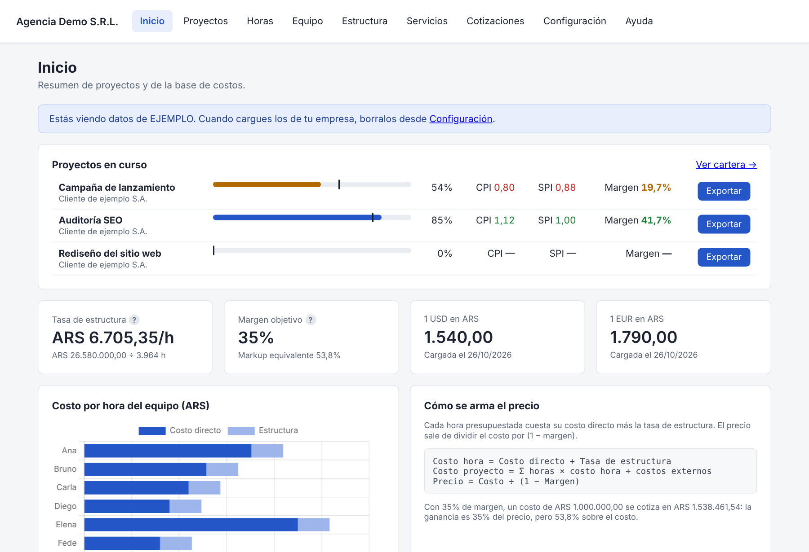
3. Recorrido por las pantallas
El menú superior tiene estas secciones:
| Sección | Para qué sirve | ¿Cada cuánto se usa? |
|---|---|---|
| Inicio | Resumen: proyectos en curso, costo por hora y cotizaciones | Cada vez que abrís |
| Proyectos | Cartera de proyectos y acceso a cada uno | Varias veces por semana |
| Horas | Planilla semanal para cargar las horas de cada persona | Una vez por semana (o a diario) |
| Equipo | Personas, su costo por hora y la carga de trabajo semanal | Al sumar o cambiar personas |
| Estructura | Gastos fijos de la empresa | Cuando cambia un gasto fijo |
| Servicios | Catálogo de lo que vendés, para armar presupuestos | Al empezar y cuando sumás un servicio |
| Cotizaciones | Cuánto vale cada moneda (dólar, euro…) en la moneda base | Cuando cambia el tipo de cambio |
| Configuración | Datos y logo de la empresa, moneda base, parámetros y datos de ejemplo | Al empezar; después, rara vez |
En casi todas las pantallas hay íconos ?: pasá el mouse por encima para ver una explicación del número.
4. Puesta en marcha (una sola vez)
Hacelo en este orden, porque cada paso usa los datos del anterior.
4.1 Borrar los datos de ejemplo
Configuración → Borrar datos de ejemplo. Se borran las personas, costos fijos, servicios, clientes y proyectos de ejemplo. Quedan los roles y las cotizaciones.
4.2 Elegir la moneda base
En Configuración → Moneda base está la moneda en la que se calculan todos los costos y precios. Por defecto es ARS (peso argentino); también se puede elegir USD, EUR, GBP, BRL, CLP, UYU o MXN.
- La moneda base solo se puede cambiar mientras no haya datos cargados (equipo, estructura, proyectos ni cotizaciones), porque todos los importes guardados están en esa moneda. Si querés otra base, borrá primero los datos de ejemplo y las cotizaciones (en Cotizaciones, botón Borrar de cada fila).
- Las demás monedas no se pierden: se convierten con las cotizaciones (sección 4.5).
4.3 Cargar los datos y el logo de la empresa
En Configuración → Datos de la empresa completá lo que quieras mostrar a tus clientes. Todos los campos son opcionales:
| Campo | Ejemplo |
|---|---|
| Nombre o razón social | Agencia Demo S.R.L. |
| Domicilio (calle y número) | Av. Corrientes 1234, piso 5 |
| Localidad, provincia, código postal y país | CABA, Buenos Aires, C1043, Argentina |
| Teléfonos | +54 11 5555-0000 |
| Email y página web | hola@agenciademo.com.ar · www.agenciademo.com.ar |
| CUIT / identificación fiscal | 30-00000000-0 |
| Validez de la propuesta | 30 días |
| Condiciones | Forma de pago, cambios de alcance, impuestos. Se imprimen al final de la propuesta tal como las escribas, así que conviene escribirlas en el idioma en que vas a enviar la propuesta |
Con Guardar datos de la empresa el nombre aparece arriba a la izquierda del programa y en el encabezado de propuestas, informes y dashboards.
Logo (opcional). Elegí un archivo PNG o JPG de hasta 2 MB. Se muestra a la izquierda de la barra superior del programa y de los dashboards en HTML. Las propuestas e informes en PDF y Excel no llevan logo: llevan los datos de la empresa. Si no cargás logo, la barra muestra solo el nombre. Con Quitar logo se elimina.
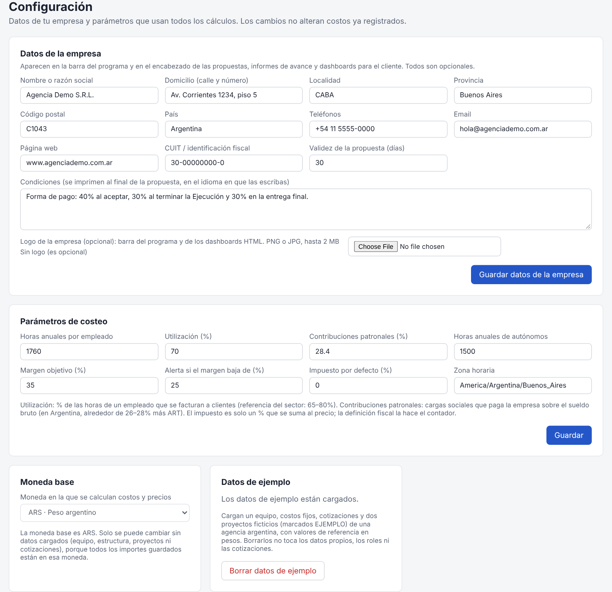
4.4 Revisar los parámetros
En Configuración → Parámetros de costeo:
| Parámetro | Qué es | Valor de referencia |
|---|---|---|
| Horas anuales por empleado | Horas de trabajo en el año de un empleado de jornada completa | 1.760 |
| Utilización | Qué parte de esas horas se factura a clientes (el resto son reuniones internas, capacitación, vacaciones) | 65% a 80% |
| Contribuciones patronales | Cargas sociales que paga la empresa sobre el sueldo bruto (jubilación, PAMI, asignaciones familiares, fondo de empleo y obra social) más la ART | 26,4% + ART ≈ 28,4% (pymes con certificado: 24% + ART) |
| Horas anuales de autónomos | Cuántas horas estimás que facturan los autónomos en el año entre todos | según la empresa |
| Margen objetivo | Ganancia buscada sobre el precio | 35% |
| Alerta si el margen baja de | Debajo de este margen los números se ponen en naranja | 25% |
| Impuesto por defecto | Solo un % que se suma al precio (por ejemplo, IVA). Qué impuesto corresponde lo define el contador | 0% |
| Zona horaria | Tu zona horaria | America/Argentina/Buenos_Aires |
Los porcentajes de contribuciones son orientativos: la alícuota exacta y la de la ART dependen de la actividad, el tamaño de la empresa y la póliza. Confirmalos con tu contador.
4.5 Cargar las cotizaciones
Cotizaciones: escribí cuánto vale 1 unidad de cada moneda en la moneda base (por ejemplo, 1 USD = 1.540 ARS) y guardá. Completá solo las monedas que uses.
- Sin cotización, el programa no puede calcular el costo de una persona o un gasto en esa moneda, ni mostrar la propuesta en dólares, y te lo avisa.
- Para cambiar el tipo de cambio, cargá la nueva cotización con su fecha. Si ya había una para esa fecha y moneda, se reemplaza. Desde esa fecha se usa la nueva; las horas y tareas ya cargadas conservan el valor con el que se registraron.
- El gráfico Evolución muestra cómo cambió cada moneda; elegila en el selector.
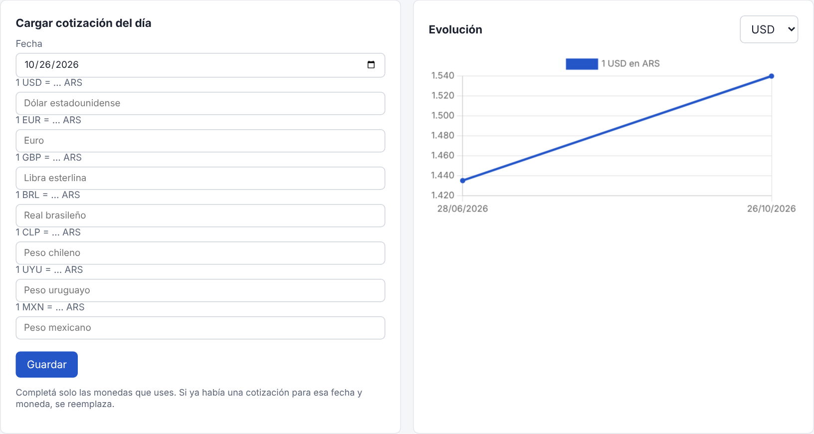
4.6 Cargar el equipo
Equipo → + Persona. Por cada persona:
- Empleado (en relación de dependencia): sueldo bruto anual con aguinaldo (13 sueldos) y, si es distinto del general, el % de contribuciones patronales.
- Autónomo (monotributista o freelance): tarifa por hora que le factura a la empresa.
- Moneda en la que cobra (por defecto, la moneda base) y su rol. Con el botón Roles podés crear o borrar roles.
La tabla muestra el costo total por hora en la moneda base de cada persona: su costo directo más la parte de gastos fijos (estructura). El ? junto al costo directo muestra la cuenta completa.
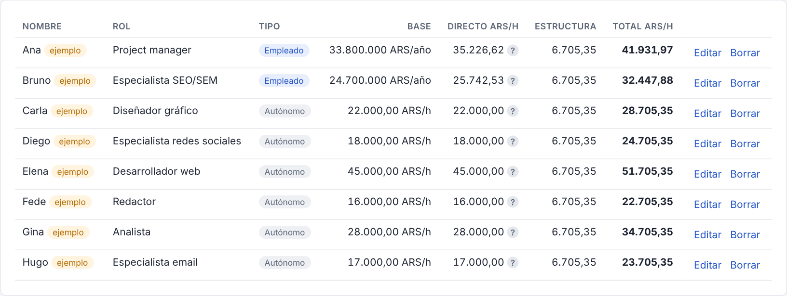
4.7 Cargar los gastos fijos
Estructura: cargá los gastos que no se cobran por separado a un cliente (software y licencias, oficina o coworking, servicios, estudio contable, horas de administración). Pueden ser mensuales o anuales y en cualquier moneda. El programa calcula la tasa de estructura: cuánto gasto fijo, en la moneda base, le corresponde a cada hora facturable.
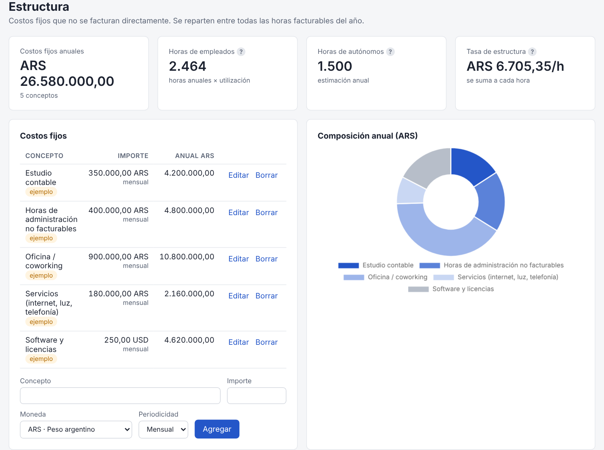
4.8 Cargar el catálogo de servicios
Servicios es la lista de lo que vendés: auditoría SEO, gestión de redes, landing page, etc. Por cada servicio cargá:
- Rol sugerido: quién lo hace habitualmente. El presupuesto usa el costo promedio por hora de las personas activas con ese rol.
- Horas sugeridas, o bien un % sobre el total para servicios que dependen del tamaño del proyecto (por ejemplo, "Reuniones y gestión" = 10% de las horas de los demás ítems).
- Etapa sugerida: la etapa del proyecto donde va (Inicio, Planificación, Ejecución, Cierre u otra).
La tabla muestra el costo estimado y el precio sugerido de cada servicio con el margen objetivo. Un servicio que ya se usó en presupuestos no se borra: queda inactivo.
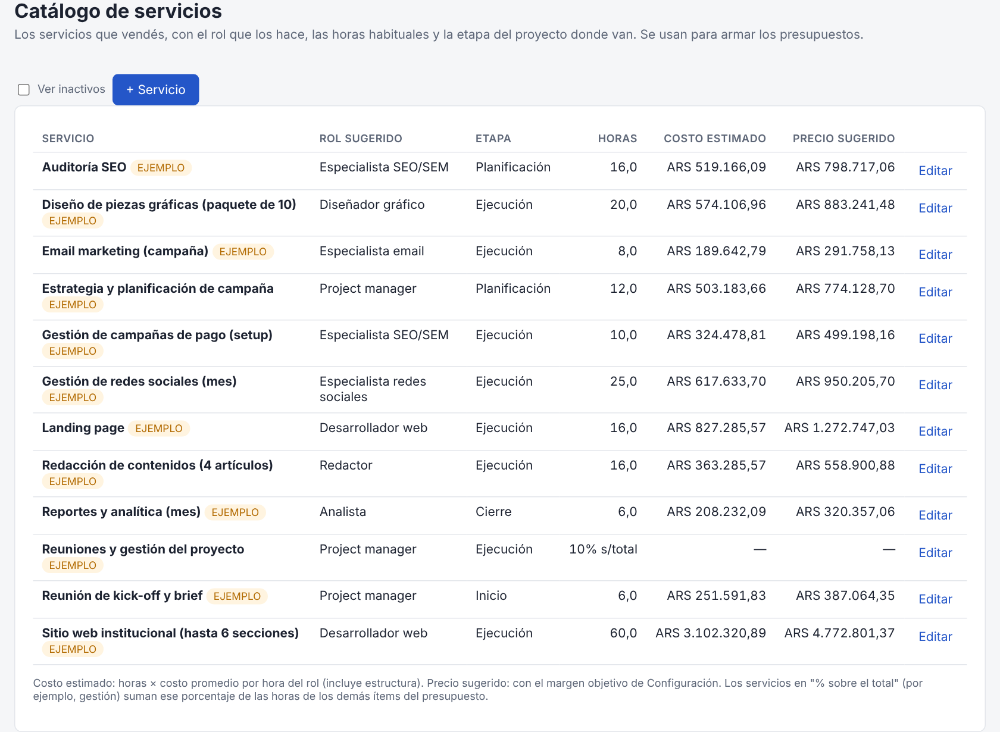
5. Crear un proyecto
Proyectos → + Proyecto. Completá nombre, cliente (con + Cliente creás uno nuevo), fecha de inicio y de fin, y, si ya lo tenés acordado, el precio en la moneda base. Si todavía lo estás cotizando, dejalo vacío, poné el estado En presupuesto y armá el presupuesto (sección 5.1): al aprobarlo, el precio se completa solo. Dentro del proyecto, junto al precio, se ve su equivalente en dólares con la cotización vigente. Dejá tildado Crear etapas desde la plantilla: el proyecto nace con las etapas Inicio, Planificación, Ejecución y Cierre, con fechas repartidas a lo largo del plazo.
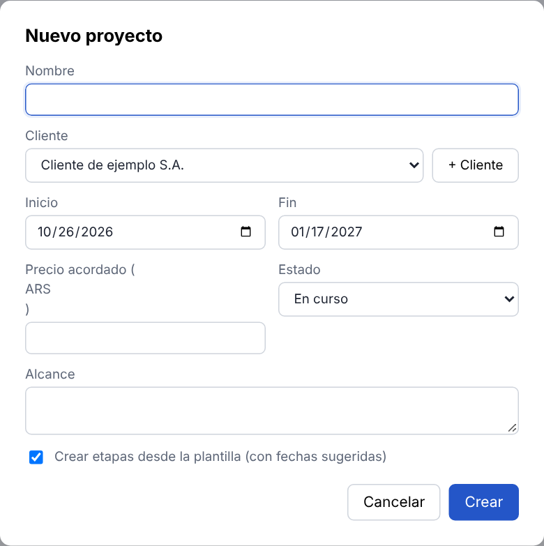
La plantilla de etapas
Proyectos → Plantilla de etapas define las etapas con las que nace cada proyecto nuevo. Cambiarla no afecta a los proyectos que ya existen.
- Peso %: cuánto cuenta la etapa en el avance total. Con Ejecución al 55%, terminar la ejecución representa más de la mitad del proyecto.
- Duración %: qué parte del plazo ocupa la etapa; con eso se sugieren sus fechas.
- Hito de cierre: el entregable que marca el fin de la etapa (por ejemplo, "Plan y calendario aprobados").
Lo ideal es que pesos y duraciones sumen 100% cada uno; la pantalla te muestra la suma.
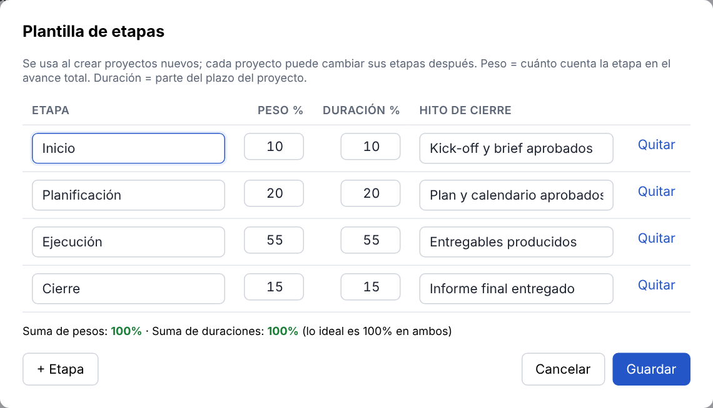
5.1 Armar el presupuesto
En el proyecto, pestaña Presupuesto → + Nueva versión. Si el proyecto está "En presupuesto", el programa abre directamente esta pestaña.
- Agregá ítems con Agregar desde el catálogo… (trae actividad, etapa, rol y horas del servicio) o con + Ítem libre.
- Ajustá cada ítem: etapa, actividad, rol, responsable (opcional: si lo elegís se usa su costo; si no, el promedio del rol), horas o % sobre el total, y costo por hora si querés fijarlo a mano.
- Cargá los gastos externos previstos (licencias, hosting, impresión) en cualquier moneda.
- Revisá el margen objetivo y el impuesto. El precio sugerido sale de costo ÷ (1 − margen); si querés redondearlo o hacer un descuento, escribí el precio final y el resumen muestra el margen real resultante y su equivalente en dólares.
Todo se guarda solo a medida que escribís. Si un ítem queda "sin costo" (por ejemplo, un rol sin personas), el programa lo avisa y no deja aprobar.
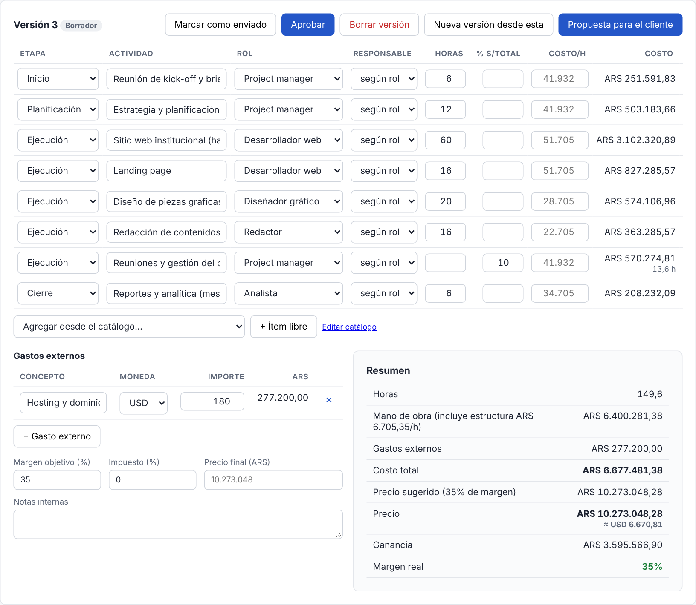
Versiones y estados
| Estado | Qué significa |
|---|---|
| Borrador | Se puede modificar |
| Enviado | Se envió al cliente; ya no se modifica. Para cambiarlo, Nueva versión desde esta |
| Aprobado | El cliente lo aceptó (ver abajo) |
| Rechazado | Descartado. Al aprobar una versión, las demás abiertas pasan a rechazadas |
Con Propuesta para el cliente descargás la propuesta de esa versión en PDF o Excel, en español o inglés y, si querés, con el equivalente en dólares. Agrupa los ítems por etapa y, como siempre, no muestra costos, márgenes ni personas.
Aprobar. Al aprobar una versión:
- se congelan sus costos por hora, la tasa de estructura, el costo y el precio (aunque después cambien sueldos o cotizaciones);
- el precio, el margen y el impuesto pasan al proyecto, que queda En curso;
- se crean las tareas del proyecto en cada etapa, con sus horas y costos, y los gastos externos previstos;
- solo puede haber una versión aprobada por proyecto. Los cambios de alcance posteriores se cargan como tareas nuevas en el proyecto.
6. Planificar el proyecto
Entrá al proyecto desde Proyectos (clic en su fila) y abrí la pestaña Etapas y tareas.
6.1 Ajustar las etapas
Clic en editar etapa (o en la tarjeta de la etapa en Resumen) para cambiar nombre, peso, fechas previstas o hito. Con + Etapa agregás otra; al borrar una etapa, sus tareas quedan "sin etapa", no se pierden.
6.2 Cargar las tareas
+ Tarea y completá:
- Etapa a la que pertenece y responsable.
- Inicio y fin previstos y horas previstas.
- Costo por hora: dejalo vacío y se toma el del responsable. Ese costo queda fijo en la tarea: si después cambia el sueldo de la persona o el tipo de cambio, lo planificado no se mueve.
El costo previsto de la tarea es horas × costo por hora. La suma de todas las tareas es el costo previsto del proyecto.
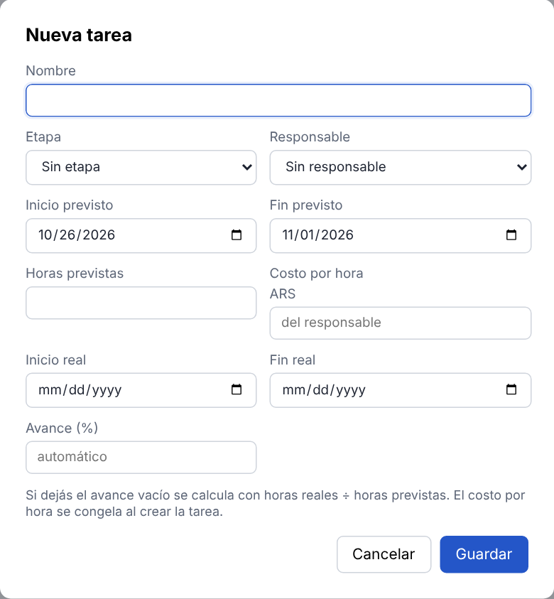
6.3 Gastos externos previstos
Si el proyecto necesita compras (imágenes, licencias, impresión), cargalas en Horas y gastos → Gastos externos con tipo Previsto. Se suman al costo previsto.
7. Seguimiento semana a semana
7.1 Cargar las horas
La forma más rápida es la pantalla Horas: elegí la persona y la semana, escribí las horas de cada día en cada tarea y apretá Guardar cambios. Las celdas modificadas se ven celestes hasta guardar.
- Aparecen las tareas de las que la persona es responsable en esa semana. Para cargar en otra, tildá Mostrar todas las tareas activas.
- Para dejar un día en cero, borrá el número y guardá.
- Cada hora se valora con el costo de la persona en la fecha trabajada (con la cotización de ese día).
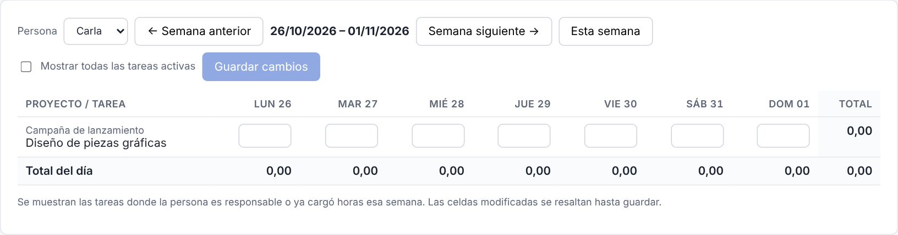
También podés cargar horas sueltas desde el proyecto, en Horas y gastos → Cargar horas.
7.2 Actualizar el avance de las tareas
En Etapas y tareas, columna Avance %, escribí cuánto está hecho cada tarea (0 a 100) y salí de la casilla: se guarda solo.
- Si lo dejás vacío, el programa lo calcula como horas reales ÷ horas previstas (aparece "auto"). Es una aproximación: si una tarea consumió todas sus horas pero está a medio hacer, conviene cargar el % real.
- Cada cambio queda registrado con su fecha; así el programa puede dibujar cómo evolucionó el proyecto.
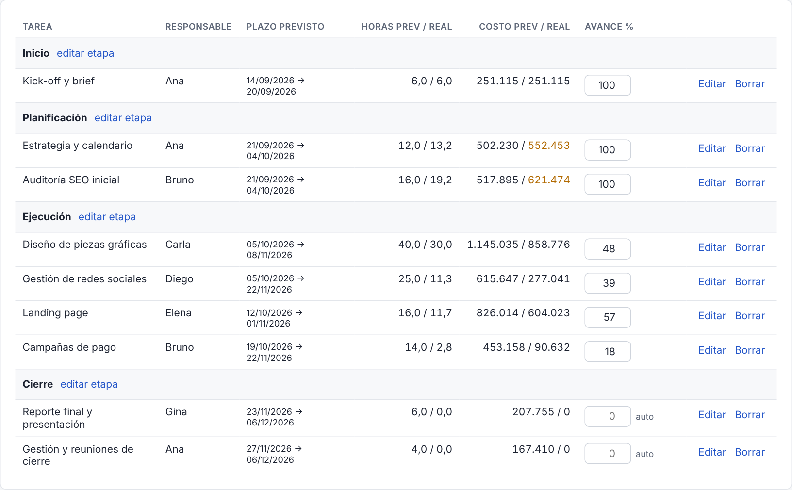
7.3 Registrar gastos reales
En Horas y gastos → Gastos externos, con tipo Real, cargá lo que efectivamente se pagó. Si es en dólares u otra moneda, se convierte con la cotización de esa fecha.
7.4 Cerrar etapas, hitos y aprobaciones
Cuando una etapa termina, abrila (clic en su tarjeta) y completá:
- Inicio real y fin real.
- Hito cumplido el: fecha en que se entregó el hito.
- Aprobada por el cliente y su fecha.
En el cronograma el rombo del hito se pinta de verde y la tarjeta muestra "Aprobada por el cliente".
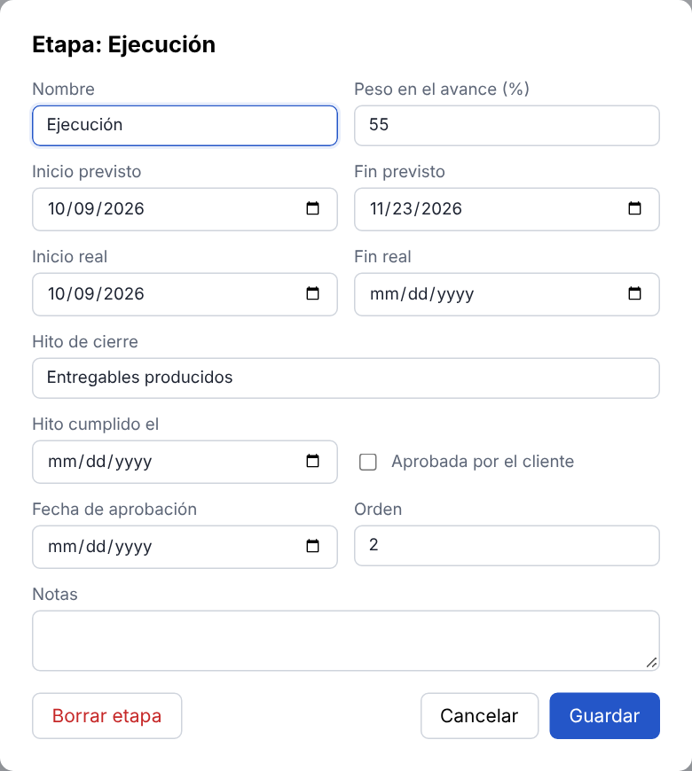
7.5 Rutina recomendada
| Cuándo | Qué hacer | Dónde |
|---|---|---|
| Cuando cambia el tipo de cambio (o una vez por semana) | Cargar la cotización | Cotizaciones |
| Cada viernes | Cargar las horas de la semana de cada persona | Horas |
| Cada viernes | Actualizar el % de avance de las tareas en curso | Proyecto → Etapas y tareas |
| Al pagar una compra | Cargar el gasto real | Proyecto → Horas y gastos |
| Al terminar una etapa | Fechas reales, hito cumplido, aprobación del cliente | Proyecto → tarjeta de la etapa |
| Cada semana | Mirar la cartera: semáforos, margen proyectado, próximos hitos | Proyectos |
| Al cerrar un proyecto | Cambiar el estado a Terminado y exportar el Excel | Proyecto → Editar |
8. Cómo leer los tableros
8.1 Los indicadores de un proyecto
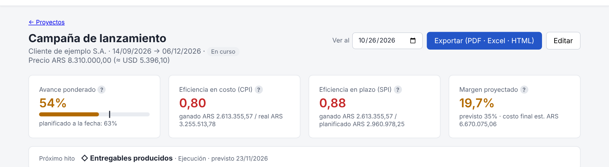
- Avance ponderado: cuánto del proyecto está hecho, sumando el avance de cada etapa según su peso. La línea negra sobre la barra marca lo que debería estar hecho a hoy según las fechas. Si la barra queda antes de la línea, el proyecto está atrasado y se pinta de naranja.
- CPI (eficiencia en costo): cuánto trabajo se obtiene por cada peso gastado. 1,00 = según lo previsto. 0,80 = por cada peso gastado se obtuvieron 80 centavos de trabajo planificado: se está gastando un 25% más de lo previsto.
- SPI (eficiencia en plazo): cuánto se avanzó respecto de lo planificado. 0,87 = se hizo el 87% de lo que debería estar hecho a hoy.
- Margen proyectado: el margen que va a quedar si el proyecto sigue gastando al ritmo actual. Se compara con el margen previsto al planificar.
- Próximo hito: el primer hito pendiente y su fecha prevista.
Colores: verde = bien (índice ≥ 0,98 o margen sobre la alerta); naranja = atención (0,90 a 0,98, o margen bajo la alerta); rojo = problema (menor que 0,90, o margen negativo).
8.2 Etapas y cronograma
Cada tarjeta de etapa muestra su avance contra lo planificado, el peso, las fechas, el hito y si el cliente la aprobó. El estado puede ser no iniciada, en curso, terminada o atrasada (la fecha de fin prevista ya pasó y no está terminada).
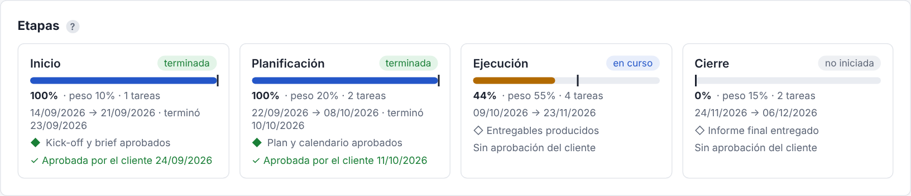
El cronograma muestra cada etapa y sus tareas:
- Barra celeste: el plazo previsto. Relleno azul: el avance. Relleno naranja: tarea vencida y sin terminar.
- Línea gris fina debajo: cuándo se trabajó realmente.
- Rombo: el hito de la etapa; verde si se cumplió.
- Línea roja punteada: hoy.
Pasando el mouse por una barra se ven fechas, avance y horas.
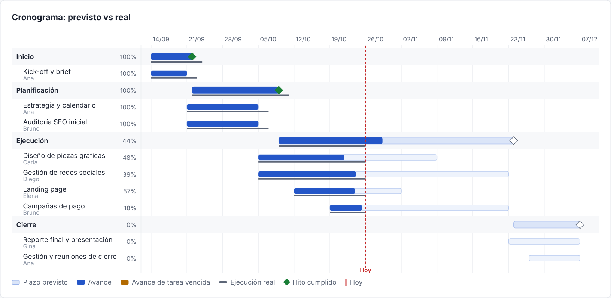
8.3 Curva S y costo por persona
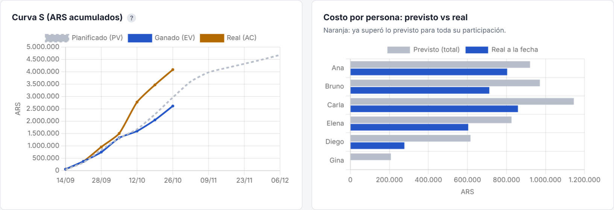
La curva S muestra tres líneas acumuladas en la moneda base:
- Planificado (gris punteado): el costo del trabajo que debería estar hecho en cada fecha.
- Ganado (azul): el costo previsto del trabajo que realmente se hizo.
- Real (naranja): lo que realmente se gastó.
Cómo leerla: si la línea naranja va por encima de la azul, se está gastando más de lo que vale lo hecho (sobrecosto). Si la azul va por debajo de la gris, el proyecto está atrasado.
El gráfico de costo por persona compara lo previsto para toda la participación de cada uno con lo gastado hasta hoy. En naranja, quien ya superó lo previsto.
El selector Ver al (arriba a la derecha del proyecto) permite ver todos estos números a una fecha pasada, por ejemplo para preparar un informe de fin de mes.
8.4 Cartera de proyectos
Proyectos muestra todos los proyectos activos con su avance, CPI, SPI, precio, margen previsto y proyectado, y próximo hito. Arriba, el resumen: cuántos proyectos hay en riesgo (CPI o SPI menores que 0,90), la facturación total (con su equivalente en dólares), el margen proyectado de toda la cartera y las etapas atrasadas.
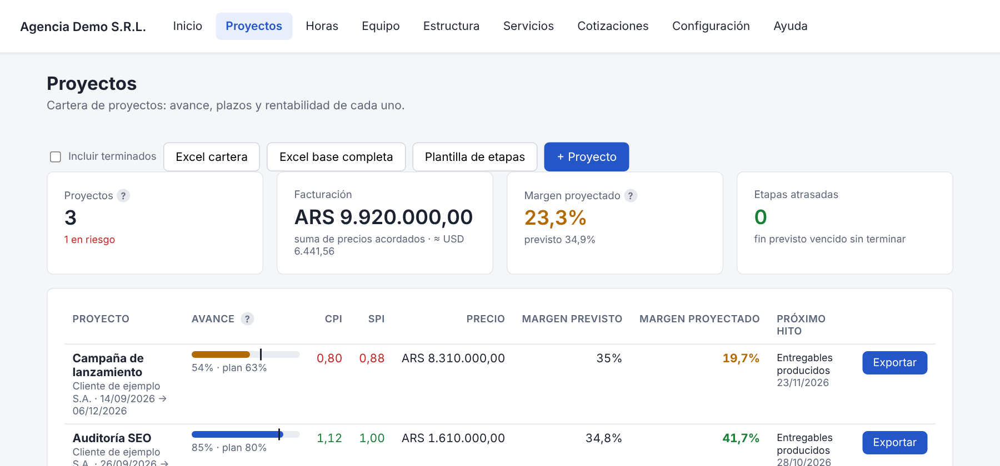
8.5 Carga del equipo
En Equipo, el gráfico Carga semanal muestra, por semana, las horas reales cargadas (barras), las horas planificadas según las tareas asignadas (línea naranja) y la capacidad de los empleados (línea punteada). Sirve para ver si alguien está sobrecargado o si hay capacidad para un proyecto nuevo.
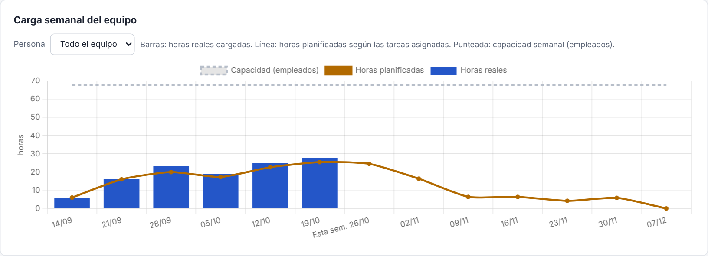
9. Exportar documentos y dashboards
El botón azul Exportar está en cada fila de Proyectos y de Inicio, y dentro de cada proyecto (Exportar (PDF · Excel · HTML)). Ofrece cinco opciones. Desde dentro del proyecto usan la fecha elegida en Ver al; desde Proyectos e Inicio, la fecha de hoy.
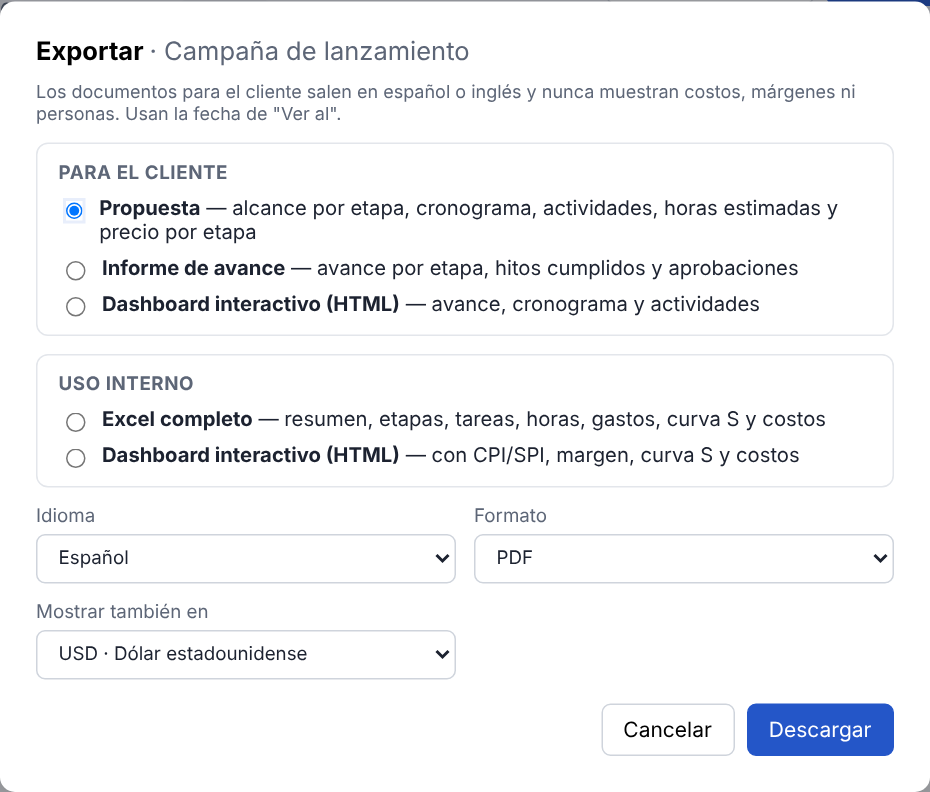
9.1 Para el cliente (en español o inglés, sin costos)
Los documentos para el cliente nunca muestran costos, márgenes, tarifas ni nombres del equipo. Llevan los datos de la empresa (sección 4.3); el dashboard HTML lleva además el logo, si cargaste uno.
En el diálogo elegí el Idioma: Español (por defecto) o English. Se aplica a la propuesta, al informe de avance y al dashboard para el cliente; títulos, fechas, estados y números salen en ese idioma. Los nombres de etapas, tareas y el alcance salen como los escribiste.
| Opción | Qué contiene | Formatos |
|---|---|---|
| Propuesta | Alcance, cronograma por etapa, actividades de cada etapa, horas estimadas, precio por etapa, total, condiciones y espacio para la firma de aceptación | PDF o Excel |
| Informe de avance | Avance general y por etapa contra lo planificado, cronograma con la línea de hoy, hitos entregados, aprobaciones del cliente y avance de cada actividad | PDF o Excel |
| Dashboard interactivo | Página con gráficos, cronograma y tabla de actividades con filtro y búsqueda | HTML |
- Precio por etapa: el precio acordado se reparte entre las etapas en proporción al costo previsto de sus tareas, es decir, según el esfuerzo de cada una. La suma siempre da el total.
- Mostrar también en (solo propuesta): elegí USD (u otra moneda) para agregar una columna con el equivalente, calculado con la cotización vigente a la fecha del documento. El documento aclara la cotización usada y que los importes que valen son los de la moneda base. Con Solo ARS sale únicamente en pesos.
- Si el proyecto tiene un % de impuesto, la propuesta muestra subtotal, impuesto y total.
9.2 Para uso interno
| Opción | Qué contiene |
|---|---|
| Excel completo | Resumen, etapas, tareas, horas, gastos, curva S y costo por persona, con gráficos |
| Dashboard interactivo | CPI, SPI, margen proyectado, curva S en la moneda base, costo por persona y tabla de tareas con costos (siempre en español) |
Además, en Proyectos están Excel cartera (todos los proyectos con sus indicadores) y Excel base completa (todas las tablas, una por hoja).
9.3 Los dashboards en HTML
El dashboard se descarga como un solo archivo .html que se abre con doble clic en cualquier navegador, sin el programa y sin internet. Se puede enviar por mail o subir a Drive. Es interactivo: al pasar el mouse por los gráficos y el cronograma se ven los valores, al hacer clic en una etapa la tabla se filtra, y las columnas se ordenan con un clic en el título. Es una foto a la fecha de exportación: para actualizarlo, se exporta de nuevo.
Los archivos se descargan en la carpeta Descargas con el nombre del proyecto y la fecha.
10. Respaldos y datos
- Los datos están en la carpeta PresupuestosApp dentro de tu carpeta de usuario (
%LOCALAPPDATA%\PresupuestosApp). Desde el menú Inicio: Presupuestos → Carpeta de datos y respaldos. - Cada vez que abrís el programa se hace un respaldo automático en la subcarpeta
backups. Se guardan los últimos 30. - Desinstalar o actualizar el programa no borra tus datos.
- Para restaurar un respaldo: cerrá el programa (ventana negra), copiá el respaldo elegido de
backupsa la carpetaPresupuestosAppy renombralo comopresupuestos.db, reemplazando el existente. Si en la carpeta hay archivospresupuestos.db-walopresupuestos.db-shm, borralos antes. - Para pasar los datos a otra computadora: instalá el programa allí, abrilo y cerralo una vez. Después, con el programa cerrado en las dos, copiá
presupuestos.db(y los archivospresupuestos.db-walypresupuestos.db-shm, si existen) a la misma carpeta de la otra computadora, reemplazando los que haya. - Recomendación: una vez por semana copiá el último respaldo a OneDrive, Google Drive o un pendrive.
11. Actualizaciones
Cuando recibas una versión nueva (por ejemplo Presupuestos-Setup-0.5.0.exe), cerrá el programa y ejecutá el instalador nuevo: reemplaza el programa y conserva todos los datos. La base se adapta sola a la versión nueva la primera vez que la abrís.
Si venías usando una versión anterior en dólares, se conservan todos los importes y la moneda base sigue siendo USD. El logo que traía esa versión ya no viene incluido: si querés verlo en la barra, cargalo en Configuración → Datos de la empresa.
12. Problemas frecuentes
| Qué pasa | Qué hacer |
|---|---|
| Windows dice "Windows protegió su PC" | Más información → Ejecutar de todos modos (sección 2) |
| El navegador dice "No se puede acceder a este sitio" | El programa está cerrado: abrilo con el acceso directo. Si la ventana negra está abierta, esperá unos segundos y recargá |
| "No hay cotización cargada para USD" | Cargá la cotización en Cotizaciones |
| No me deja cambiar la moneda base | Ya hay datos cargados. Ver sección 4.2 |
| La barra no muestra logo | El logo es opcional: cargalo en Configuración → Datos de la empresa |
| Un costo por hora aparece como "—" | Falta la cotización de la moneda de esa persona |
| Cambié un sueldo y el costo de una tarea no cambió | Es correcto: el costo por hora queda fijo en la tarea al crearla. Para recalcularlo, editá la tarea y escribí el nuevo costo por hora |
| El avance dice "auto" | No cargaste un % manual: se calcula por horas. Escribí el % real si no coincide |
| Una etapa aparece "atrasada" | La fecha de fin prevista ya pasó. Si en realidad terminó, cargá su fin real; si cambió el plan, actualizá el fin previsto |
| La ventana negra muestra un error | Cerrala y volvé a abrir el programa. Si se repite, enviá el archivo logs\app.log de la carpeta de datos |
13. Glosario
| Término | Significado |
|---|---|
| Moneda base | Moneda en la que se calculan y guardan todos los importes (por defecto ARS) |
| Cotización | Cuántas unidades de la moneda base vale 1 unidad de otra moneda (1 USD = 1.540 ARS) |
| Costo directo por hora | Lo que cuesta una hora de una persona: sueldo con contribuciones patronales ÷ horas facturables, o la tarifa del autónomo |
| Tasa de estructura | Gastos fijos anuales ÷ horas facturables del año. Se suma a cada hora |
| Utilización | Parte de las horas de un empleado que se facturan a clientes |
| Margen | Ganancia como % del precio: (precio − costo) ÷ precio |
| Markup | Ganancia como % del costo. Un margen de 35% equivale a un markup de 53,8% |
| Costo previsto (BAC) | Suma del costo de todas las tareas planificadas |
| Valor planificado (PV) | Costo del trabajo que debería estar hecho a una fecha |
| Valor ganado (EV) | Costo previsto del trabajo que realmente está hecho |
| Costo real (AC) | Lo efectivamente gastado en horas |
| CPI | Valor ganado ÷ costo real. Menor que 1: sobrecosto |
| SPI | Valor ganado ÷ valor planificado. Menor que 1: atraso |
| Costo final estimado (EAC) | Costo previsto ÷ CPI, más los gastos externos: cuánto va a costar el proyecto si sigue igual |
| Avance ponderado | Suma del avance de cada etapa multiplicado por su peso |
| Hito | Entregable que marca el cierre de una etapa |
| Versión del presupuesto | Cada propuesta de precio y alcance enviada al cliente; la aprobada congela costos y genera las tareas |
14. Licencia y autoría
Presupuestos y seguimiento de proyectos es software libre. Copyright © 2026 Eduardo José Moreno.
Se distribuye bajo la Licencia Pública General GNU versión 3 (GPL-3.0) o posterior: podés usarlo, estudiarlo, modificarlo y compartirlo, también con fines comerciales, siempre que las versiones que distribuyas sigan siendo libres bajo la misma licencia.
Términos adicionales (sección 7 de la GPL-3.0):
- Toda copia o versión modificada debe conservar visible la leyenda "Desarrollo e Implementación: Lic. Eduardo J. Moreno" en el pie de las pantallas y de los documentos y dashboards que genera.
- Las versiones modificadas deben indicar que lo son y quién las modificó.
El programa se entrega sin ninguna garantía. El texto completo de la licencia y el aviso de autoría están en los archivos LICENSE y NOTICE.md de la carpeta del programa y del repositorio.